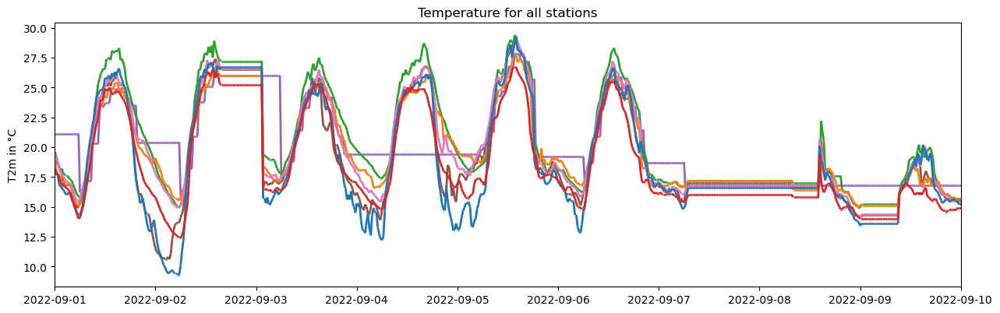
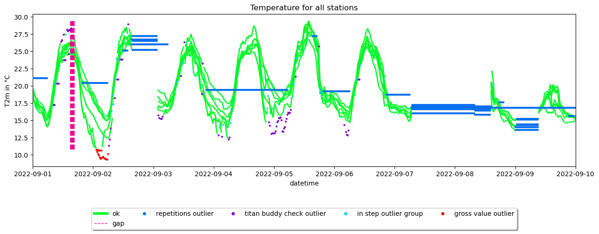
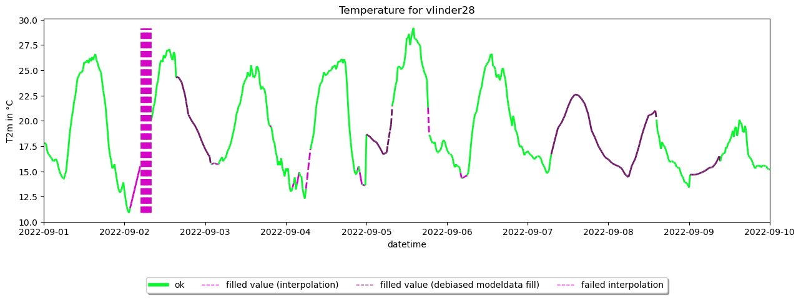
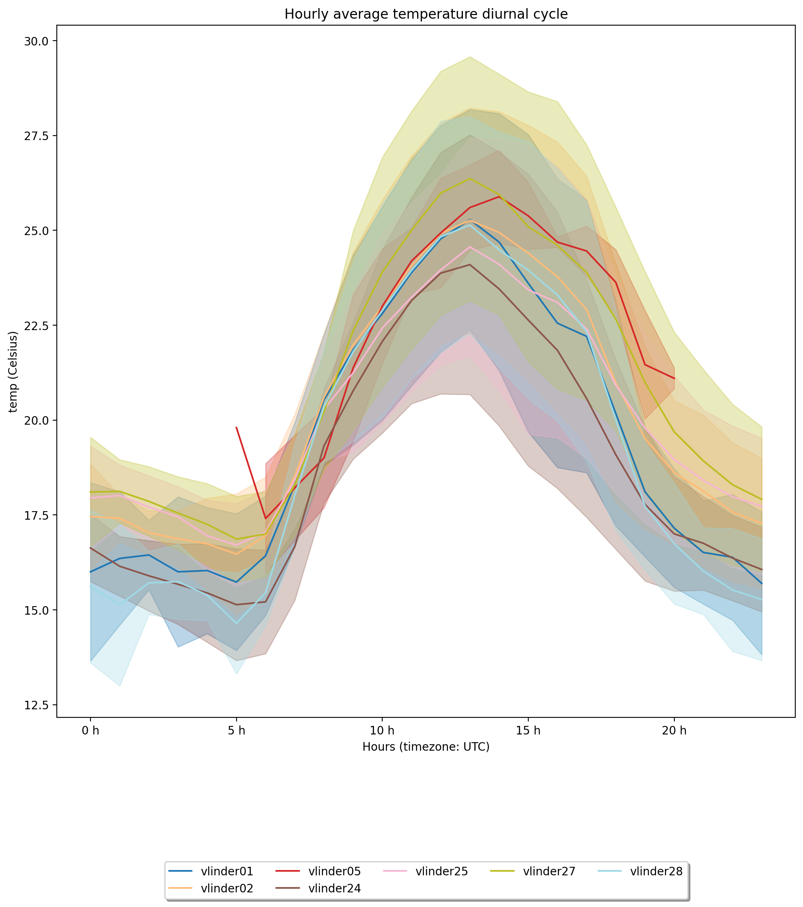

JOSS publication figures creator#
This script will create the figures that are used in the JOSS publication of the Metob-toolkit.
[1]:
#!pip install MetObs-toolkit
[2]:
import logging
import math
import os
import sys
import time
from pathlib import Path
import metobs_toolkit
print(f'Metobs_toolkit version: v{metobs_toolkit.__version__}')
import matplotlib.pyplot as plt
import pandas as pd
Metobs_toolkit version: v0.2.3
Creation of the Dataset#
[3]:
datadf = pd.read_csv(metobs_toolkit.demo_datafile, sep=';')
metadf = pd.read_csv(metobs_toolkit.demo_metadatafile, sep=',')
# Subset to regio ghent
ghent_stations = [ 'vlinder24', 'vlinder25', 'vlinder05', 'vlinder27',
'vlinder02', 'vlinder01', 'vlinder28']
datadf = datadf[datadf['Vlinder'].isin(ghent_stations)]
metadf = metadf[metadf['Vlinder'].isin(ghent_stations)]
# subset period
datadf['dummy_dt'] = datadf['Datum'] + datadf['Tijd (UTC)']
datadf['dummy_dt'] = pd.to_datetime(datadf['dummy_dt'], format='%Y-%m-%d%H:%M:%S')
#Subset to period
from datetime import datetime
startdt = datetime(2022, 9, 1)
enddt = datetime(2022, 9, 10)
datadf = datadf[(datadf['dummy_dt'] >= startdt) & (datadf['dummy_dt'] <= enddt)]
datadf = datadf.drop(columns=['dummy_dt'])
# Inducing outliers as demo
datadf = datadf.drop(index=datadf.iloc[180:200, :].index.tolist())
# save in paper folder
folder = os.path.abspath('')
datadf.to_csv(os.path.join(folder, 'datafile.csv'))
metadf.to_csv(os.path.join(folder, 'metadatafile.csv'))
#Importing raw data
use_dataset = 'paper_dataset'
dataset = metobs_toolkit.Dataset()
dataset.update_output_dir(folder)
dataset.update_file_paths(input_data_file=os.path.join(folder, 'datafile.csv'),
input_metadata_file=os.path.join(folder, 'metadatafile.csv'),
template_file=metobs_toolkit.demo_template,
)
dataset.import_data_from_file()
The following data columns are renamed because of special meaning by the toolkit: {}
Unnamed: 0 is present in the datafile, but not found in the template! This column will be ignored.
Luchtdruk is present in the datafile, but not found in the template! This column will be ignored.
Neerslagintensiteit is present in the datafile, but not found in the template! This column will be ignored.
Neerslagsom is present in the datafile, but not found in the template! This column will be ignored.
Rukwind is present in the datafile, but not found in the template! This column will be ignored.
Luchtdruk_Zeeniveau is present in the datafile, but not found in the template! This column will be ignored.
Globe Temperatuur is present in the datafile, but not found in the template! This column will be ignored.
The following metadata columns are renamed because of special meaning by the toolkit: {}
These stations will be removed because of only having one record: []
Styling settings#
[4]:
# change color for printing (avoid yellow!)
from metobs_toolkit.settings_files.default_formats_settings import label_def
label_def['gross_value']['color'] = "#fc0303"
Timeseries for each station#
[5]:
#1. Coarsen resolution and apply quality control with non-defaults as demonstration
dataset.coarsen_time_resolution(freq='20min')
ax1 = dataset.make_plot()
#translate axes
ax1.set_title('Temperature for all stations')
ax1.set_ylabel('T2m in °C')
plt.show()
A 0 days 00:00:00 is given as an argument for a timedelta.

Timeseries with quality control labels#
[6]:
#update QC settings
dataset.update_qc_settings(obstype='temp',
dupl_timestamp_keep=None,
persis_time_win_to_check=None,
persis_min_num_obs=None,
rep_max_valid_repetitions=None,
gross_value_min_value=10.7,
gross_value_max_value=None,
win_var_max_increase_per_sec=None,
win_var_max_decrease_per_sec=None,
win_var_time_win_to_check=None,
win_var_min_num_obs=None,
step_max_increase_per_sec=5./3600.,
step_max_decrease_per_sec=None)
dataset.update_titan_qc_settings(obstype='temp', buddy_radius=10000,
buddy_num_min=3, buddy_threshold=2.2,
buddy_max_elev_diff=None,
buddy_elev_gradient=None,
buddy_min_std=1.0,
buddy_num_iterations=None,
buddy_debug=None)
dataset.apply_quality_control()
dataset.apply_titan_buddy_check(use_constant_altitude=True)
# Create the plot
ax2 = dataset.make_plot(colorby='label')
#translate axes
ax2.set_title('Temperature for all stations')
ax2.set_ylabel('T2m in °C')
plt.show()
The windows are too small for stations ['vlinder01', 'vlinder02', 'vlinder05', 'vlinder24', 'vlinder25', 'vlinder27', 'vlinder28'] to perform persistance check
buddy radius for the TITAN buddy check updated: 50000--> 10000.0
buddy num min for the TITAN buddy check updated: 2--> 3
buddy threshold for the TITAN buddy check updated: 1.5--> 2.2
buddy min std for the TITAN buddy check updated: 1.0--> 1.0

Fill gaps and plot timeseries of Vlinder28#
[7]:
# 1. Convert the outliers to gaps
dataset.convert_outliers_to_gaps()
# 2. Extract ERA5 temperature timeseries at the location of the stations
era5 = dataset.get_modeldata(
Model=dataset.gee_datasets['ERA5-land'],
obstypes='temp',
stations=None,
startdt=None,
enddt=None,
force_direct_transfer=True)
# 3. Fill the gaps (For shorter gaps we use interpolation, and for longer gaps we use debiased ERA5 temperature).
short_gaps = []
long_gaps = []
for gap in dataset.gaps:
if (gap.duration <= pd.Timedelta('6h')):
short_gaps.append(gap)
else:
long_gaps.append(gap)
#interpolate the short gaps
for shortgap in short_gaps:
shortgap.interpolate(
Dataset=dataset,
method="time", #Simple (weighted) linear interpolated
max_consec_fill=10,
n_leading_anchors=1,
n_trailing_anchors=1,
max_lead_to_gap_distance=None,
max_trail_to_gap_distance=None,
method_kwargs={})
# Fill the longer gaps with debiased ERA5 temperatures
for longgap in long_gaps:
longgap.debias_model_gapfill(
Dataset=dataset,
Model=era5,
leading_period_duration="24h",
min_leading_records_total=3,
trailing_period_duration="24h",
min_trailing_records_total=3)
# 4. Make plot (of single station for clearity)
ax3 = dataset.get_station('vlinder28').make_plot(colorby='label')
#translate axes
ax3.set_title('Temperature for vlinder28')
ax3.set_ylabel('T2m in °C')
plt.show()
The current gaps will be removed and new gaps are formed!
Cannot fill temp-gap of vlinder05 for 2022-09-01 00:00:00+00:00 --> 2022-09-01 05:40:00+00:00, duration: 0 days 05:40:00 or 18 records., because leading record is not valid.
Cannot fill temp-gap of vlinder05 for 2022-09-06 20:40:00+00:00 --> 2022-09-07 06:00:00+00:00, duration: 0 days 09:20:00 or 29 records., because trailing period is not valid.
Cannot fill temp-gap of vlinder05 for 2022-09-07 06:40:00+00:00 --> 2022-09-10 00:00:00+00:00, duration: 2 days 17:20:00 or 197 records., because trailing period is not valid.
/home/thoverga/Documents/VLINDER_github/MetObs_toolkit/metobs_toolkit/dataset_core.py:503: FutureWarning: The behavior of DataFrame concatenation with empty or all-NA entries is deprecated. In a future version, this will no longer exclude empty or all-NA columns when determining the result dtypes. To retain the old behavior, exclude the relevant entries before the concat operation.
combdf = pd.concat([df, outliersdf]) # combine the two

Diurnal Analysis#
[8]:
# Get Meta data
dataset.get_landcover(buffers=[50, 150, 500], aggregate=True)
# Create analysis from the dataset
ana = metobs_toolkit.Analysis(orig_dataset = dataset,
use_gapfilled_values=True)
# Make diurnal cycle analysis with plot
ax4 = ana.get_diurnal_statistics(colorby='name',
obstype='temp',
plot=True,
title='Hourly average temperature diurnal cycle',
legend=True,
errorbands=True,
_return_all_stats=False)
fig = plt.gcf()
fig.set_dpi(200)
fig.tight_layout()
plt.show()

Interactive spatial#
[9]:
dataset.make_gee_static_spatialplot(Model=dataset.gee_datasets['worldcover'])
/home/thoverga/Documents/VLINDER_github/MetObs_toolkit/metobs_toolkit/modeldata.py:1056: UserWarning: Geometry is in a geographic CRS. Results from 'centroid' are likely incorrect. Use 'GeoSeries.to_crs()' to re-project geometries to a projected CRS before this operation.
centroid = self.metadf.dissolve().centroid
[9]: